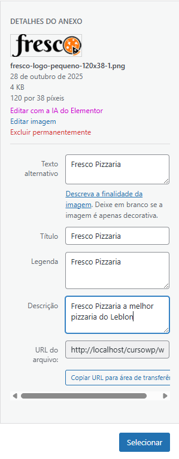

Personalizando Fresco:
Acesse o menu personalizar
Em seguida insira a logo do seu site Fresco
Defina o nome para o seu site: Fresco Pizzaria
Carregue a logo em identidade do site e preencha os campos com "Fresco Pizzaria", menos o Descrição que você completa com: Fresco Pizzaria a melhor Pizzaria do Leblon

Adicione um botão de Contato:
Acesse o menu Cabeçalho, é possível fazer alterações como: Inserir botões, mudar sua cor etc.
No menu Tema do Botão é possível fazer alterações em sua cor e posição quando o site mudar de formato de tela.
Agora para alterar a cor do botão, entre em global > botão > Customizar Botão (Style Guide)